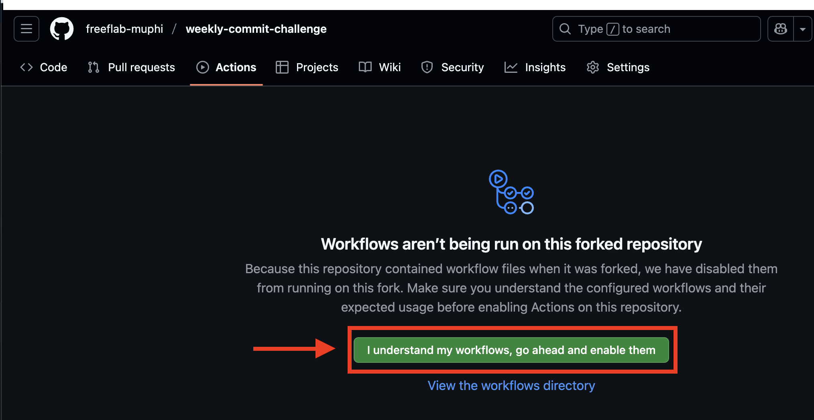
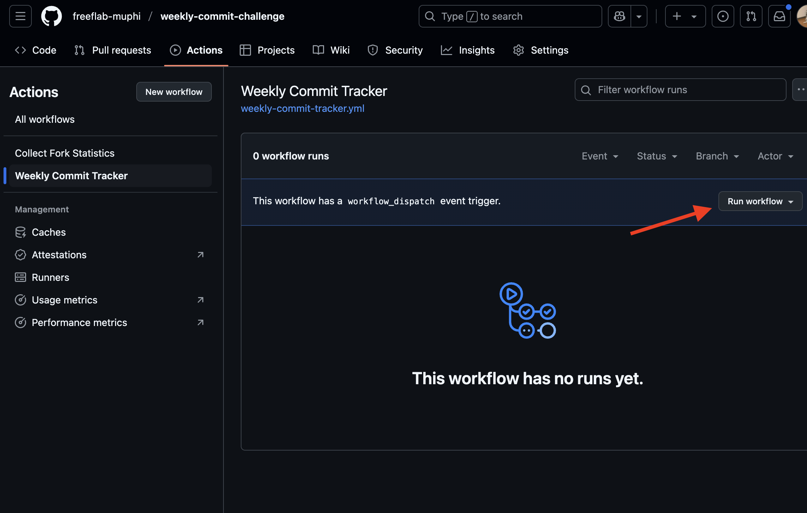

🔥 위클리 커밋 챌린지
꾸준히 커밋하는 습관을 기록하고 추적해보세요!
지금 참여하면 이번 주부터 기록이 시작됩니다
🤔 생각보다 쉽지 않을 걸요? 매주 커밋할 자신 있나요?
총 참여자
-
이번 주 성공
-
평균 성공률
-
평균 연속 성공
-
🏅 참여자 랭킹
랭킹을 불러오는 중...
👤 내 참여 현황
예: tlqhrm 또는 https://github.com/tlqhrm
📝 참여 방법
2
GitHub Actions 활성화
Fork한 레포지토리의 Actions 탭에서 워크플로우를 활성화하세요.
Repository → Actions → "I understand my workflows, go ahead and enable them"
📸 워크플로우 활성화 가이드
1단계: Actions 활성화 허용
"I understand my workflows, go ahead and enable them" 버튼을 클릭하여 Actions를 허용하세요.
2단계: 워크플로우 활성화

"Weekly Commit Tracker" 워크플로우의 "Enable workflow" 버튼을 클릭하여 활성화하세요.
3단계: 수동 실행 (선택사항)
즉시 기록을 시작하려면 "Run workflow" 버튼을 클릭하여 수동으로 실행하세요.
3
일주일에 한 번 커밋하기!
매시간 정각에 자동으로 실행되어 지난 일주일간의 커밋을 체크하고 기록합니다.
✅ 일주일에 한 번만 커밋해도 성공 기록!
📋 record.md에 참여 내역이 테이블로 누적됩니다
💪 "매주 한 번쯤은 커밋할 수 있지 뭐" 라고 생각하시나요?
⏰ 실제로는 2주만 지나도 깜빡하기 쉬워요!
🎯 진짜 개발자라면 꾸준함을 증명해보세요!
📝 참여 기록 예시
| ID | 기간 | 주차 | 커밋 수 | 성공 여부 |
|---|---|---|---|---|
| 1 | 06/23 ~ 06/29 | 2025년 25주차 | 5 | ✅ 성공 |
| 2 | 06/30 ~ 07/06 | 2025년 26주차 | 3 | ✅ 성공 |
| 3 | 07/07 ~ 07/13 | 2025년 27주차 | 0 | ❌ 실패 |